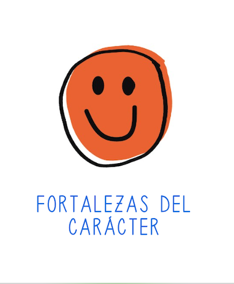
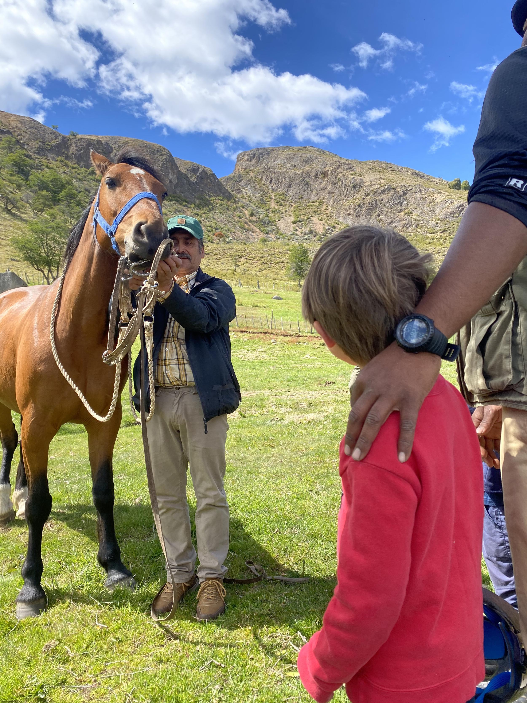

Programas
Experiencias que abren nuevos caminos de aprendizaje.
Rutas del Bibliomóvil
El bibliomóvil recorre la cuenca del lago llevando libros y música a las escuelas rurales y a sus familias.

Ruta de la Lectura
Cada semana, el bibliomóvil visita las escuelas de Puerto Guadal, Puerto Bertrand y Mallín Grande con sesiones de mediación lectora.
Ver más
Ruta de la Música
Talleres basados en el juego, la expresión corporal y la práctica instrumental, para despertar el interés y la sensibilidad musical de los estudiantes.
Ver más
Fortalezas del Carácter en Aysén
Junto a Fundación Astoreca, el programa Soy+ Astoreca ayuda a los alumnos de nuestras tres escuelas a desarrollar hábitos positivos y confianza para la vida.
Ver más
Taller Medioambiental
Experiencias prácticas de exploración y aprendizaje en el huerto de permacultura Alma Verde, junto a la escuela de Puerto Guadal.
Ver más
Actividades Extraprogramáticas
Salidas y encuentros para niños y familias ligados a la naturaleza, la cultura, la música, el arte y la lectura.
Ver más
Nueva Biblioteca Escolar
En 2025, con el apoyo de Fundación Angelini, renovamos la biblioteca de la escuela de Puerto Guadal.
Ver másConversemos
Escríbenos si quieres ayudar, sumarte como aliado o conocer más de nuestro trabajo.